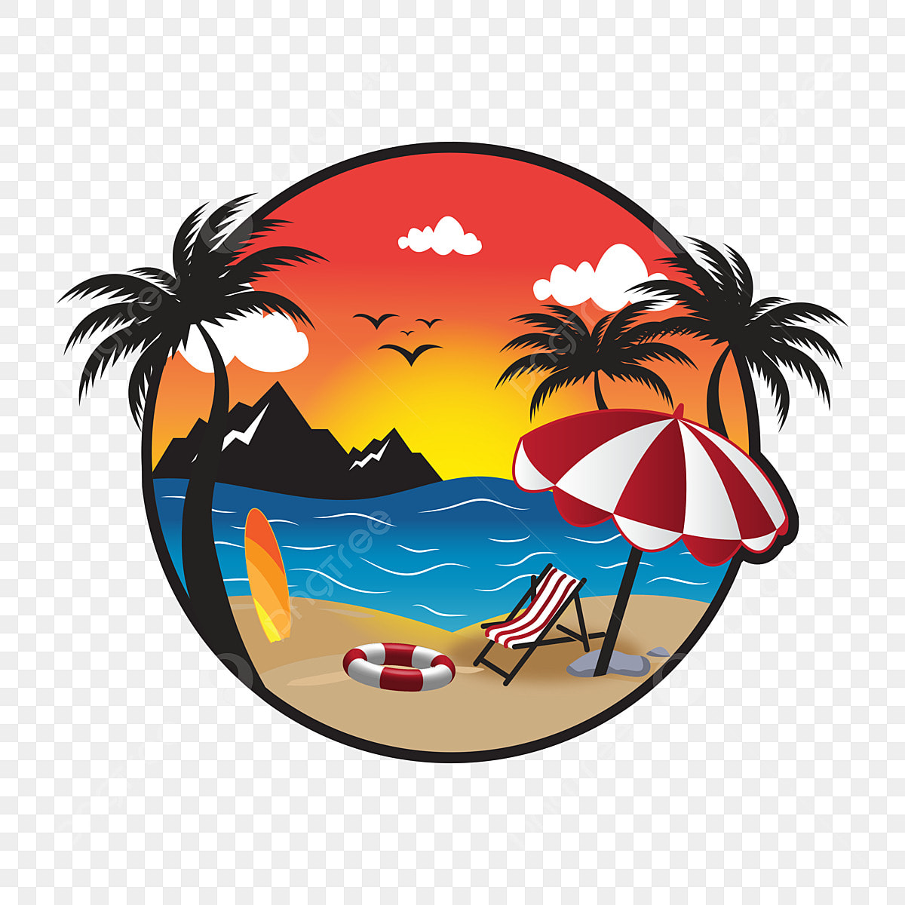

  <nav class="navbar navbar-expand-md bg-primary" data-bs-theme="dark">
        <div class="container-fluid">
          <a class="navbar-brand" href="#"> </a>
          <button
            class="navbar-toggler"
            type="button"
            data-bs-toggle="collapse"
            data-bs-target="#navbarTogglerDemo02"
            aria-controls="navbarTogglerDemo02"
            aria-expanded="false"
            aria-label="Toggle navigation"
          >
            <span class="navbar-toggler-icon"></span>
          </button>
          <div class="collapse navbar-collapse" id="navbarTogglerDemo02">
            <ul class="navbar-nav me-auto mb-2 mb-md-0">
              <li class="nav-item">
                <a class="nav-link active" aria-current="page" href="#">Home</a>
              </li>
              <li class="nav-item">
                <a class="nav-link" href="#">Saldi</a>
              </li>
              <li class="nav-item">
                <a class="nav-link" href="#">Welcome Summer</a>
              </li>
              <li class="nav-item">
                <a class="nav-link" aria-disabled="true"
                  >Last minute</a
                >
              </li>

              <li class="nav-item">
                <a class="nav-link" aria-disabled="true"
                  >Recensioni</a>
              </li>

            </ul>
            <form class="d-flex" role="search">
              <input
                class="form-control me-2"
                type="search"
                placeholder="Cerca nel sito"
                aria-label="Search"
              />
              <button class="btn btn-outline-light" type="submit">Cerca</button>
            </form>
          </div>
        </div>
      </nav>